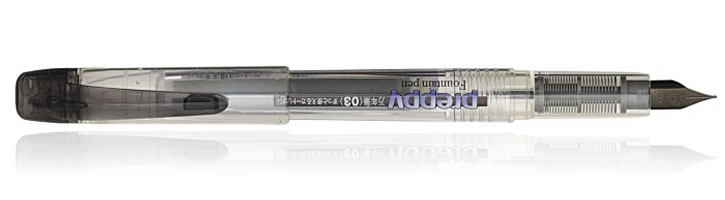

I first used a fountain pen in second grade, but it was only in late 2015 when I picked it up as a “hobby.” Since then, other than for writing on surfaces that absolutely will not tolerate liquid ink, I have seldom picked up a ballpoint or rollerball ink. In fact, I’ve joined some in the fountain pen online community in calling them “peasant sticks” (jokingly, of course).
So, naturally, I’ve started trying to convert my friends to this hobby – my birthday presents to them have shifted from cookies, ties, and pocket squares to fountain pens, almost exclusively. There are a couple fountain pens that I usually get for first time users.
Top Pick: Jinhao X750, with a Custom Nib
The pen that I give as presents the most often is the Jinhao X750, a Chinese-made fountain pen. I like it X750 for two main reasons – it is extremely affordable and still look “fancy.” The “Shimmering Sands” design, pictured above, is especially popular because of the subtle silver glitter on the barrel.
Another key appeal of the X750 is its modularity, and not just because of my training as an engineer. Unlike most modern pens, the X750 comes with a converter, which allows the writer to use bottled ink without dishing out extra cash. In addition, it accepts “standard international ink cartridges,” which means that it will be easy to find refills for those who favor convenience. Diamine, J. Herbin, Kaweco, Pelikan, and many other ink manufacturers make cartridges that would fit in the X750, meaning that the pen’s user can find a wide variety of color choices without having to subject themselves to the messiness of refilling from a bottle.
Even the pen’s nib is standard and easy to replace – any “#6 nib” would be able to fit into the pen, which allows the user to change the width and style of their writing. This leads me to one of the drawbacks of the pen – the nib that it comes with is a bit flexible and somewhat bold/thick, which means that it might not be suitable for someone who is trying out fountain pens for the first time. Furthermore, the quality control on these pens tends to be variable. Because of this, I almost always replace the nib with a Fine or Extra Fine from Nemosine or Goulet Pens. This is not only an easier “starting point” for new fountain pen users, but will also show that you put in more time to customize the gift for the recipient.
This Jinhao X750 is widely available on eBay and Amazon from Chinese sellers for under $5. You can also find the pen on Goulet Pens for slight markup in return for better quality control and, if you’re in the United States, faster delivery. Perhaps somewhat ironic is that replacement nibs will probably run more expensive than the pen itself – Goulet Pens nibs run for $15, and Nemosine nibs $10.
Second Choice: Platinum Preppy Eyedropper Pen, Fine Nib
 More recently, I’ve started giving out Platinum Preppies, which are plastic, refillable but cheap-enough-to-be-disposable fountain pens from Japan. The chief appeal of this pen to me is its nib – a Japanese firm fine steel nib that reliably produces 0.38mm lines. Beginner fountain pen users tend to have an easier time with these firmer, finer nibs, and the Preppy is probably the cheapest pen you can find with that quality.
Admittedly, though, Platinum Preppies both look and feel cheap – their bodies are plastic, transparent, and covered in writing. However, these pens are in fact incredibly sturdy. Also, I find that people are more likely to use a Preppy than a fancier, metal pen, simply because the former seems less intimidating, thus facilitating smoother learning and transition.
Another good thing about the lack of metal in the pen body is that it can be converted into an “eyedropper,” which means that the entire barrel can be filled with ink if the threading is properly silicone grease-sealed and fitted with an O-ring (many tutorials show how to do this). I estimate that the pen can take around 3mL of ink, which would in turn supply a good 200 pages of writing. I usually eyedropper-convert Preppies before giving them out as gifts – in addition to showing the time and consideration I put into choosing the right ink, the ability to see ink sloshing around in the pen barrel adds novelty to an otherwise plain-seeming pen.
The Platinum Preppy is easy to find online, and usually come with an ink cartridge. You can usually find them in rainbow-colored 7-packs from Amazon for around $15. Goulet Pens, Anderson Pens, and JetPens also sell these pens individually, where they run for around $3-4 each.
Third Choice: Pilot Metropolitan Fountain Pen, Fine or Medium Nib
According to the fountain pen subreddit and many other online resources, the Pilot Metropolitan tends to be the first fountain pen that beginners buy to get into the habit. In some ways, the pen combines the best qualities of the Jinhao X750 and the Platinum Preppy – it has both an aesthetically appealing metal body and a reliable firm nib (~0.38mm for fine, ~0.5mm for medium). In other ways, it’s pretty much perfect out of the box.
Why, then, isn’t the Pilot Metropolitan number one on my list? I find that it’s a bit generic for a gift, and the only way you can really “customize” it is to pair it with ink samplers. So, I’d rather have this pen be the first that my friends would later purchase for themselves after becoming more involved in the hobby rather than gifting it to them.
The Pilot Metropolitan can be found online (Amazon, JetPens, Goulet Pens, Anderson Pens), and usually sells for $15 for the pen, a cartridge, and a converter. However, if you’re looking to use bottled ink, I suggest buying a twist converter (CON-50 or CON-70), which will add a couple more bucks to the total price.
Other Good Choices
Besides the Jinhao X750, Platinum Preppy, and Pilot Metropolitan, there are definitely more pens that you can buy for friends that you want to bring into the fountain pen hobby. For instance, the Jinhao 159 is very similar to the X750, and as a “tribute” to the Montblanc Meisterstück 149, it looks even more fancy-looking. The Lamy fountain pens are popular alternatives to Pilot Metropolitans, and the brand’s Safari, Vista, and Al-Star models have triangular grip that show beginner users how to hold their pens in the correct orientation. I, however, never saw the appeal. My handwriting slants to the right, which means that I hold my pens at a different angle. The triangular grip, thus, disrupts my writing more than it helps.
Friends don’t let friends use peasant pens – what pens do you give your friends to start them on the hobby?